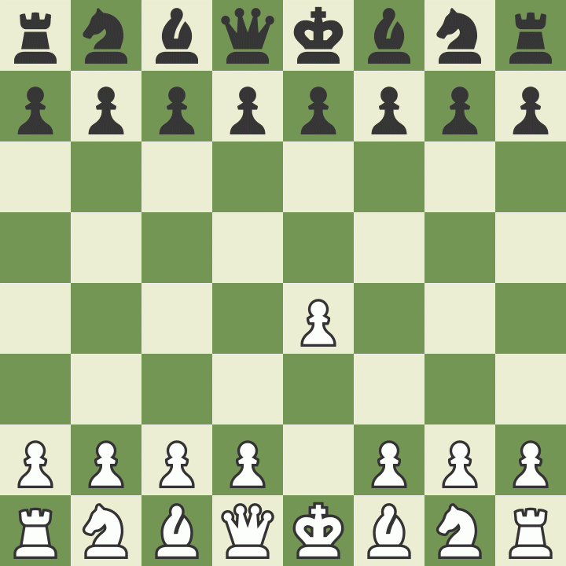
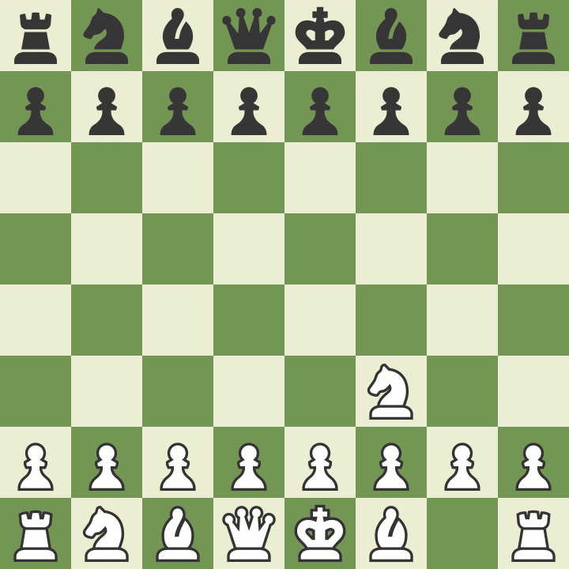

Partidas Memoráveis da História do Xadrez
Kasparov vs. Topalov, Wijk aan Zee 1999
Apesar de ter perdido um confronto histórico para o programa de computador Deep Blue dois anos antes, Garry Kasparov estava no auge dos seus poderes em 1999, vencendo torneios por margens grandes e registando a pontuação mais alta no ranking(2851). Kasparov tem uma longa lista de brilhantismos para seu crédito, mas esta partida é a sua virtualmente indiscutível, obra-prima.

Kasparov vs. Topalov, Wijk aan Zee. Fonte: Chess.com
Morphy vs. Allies, Paris Opera 1858
Frequentemente chamada a "Partida da Opera," a obra-prima informal de Paul Morphy jogada contra o Duque de Brunswick e o Conde Isouard. Esta ilustra o valor do desenvolvimento, centralização, e da segurança do rei, mas mais importante, esta é uma partida perfeitamente concisa para ilustrar a beleza do xadrez.
Morphy vs. Allies, Paris Opera. Fonte: Chess.com
Karpov vs. Kasparov, Campeonato Mundial 1985, partida 16
Não existe uma rivalidade maior na história do xadrez do que aquela entre Garry Kasparov e Anatoly Karpov. As partidas brilhantes que eles disputaram são dignas de cinema. Esta partida do campeonato mundial de 1985 demonstra Kasparov ao seu melhor, executando sempre cálculos e táticas exatas.
Karpov vs. Kasparov, Campeonato Mundial 1985. Fonte: Chess.com
Byrne vs. Fischer, Nova Iorque 1956
Com a idade de 13 anos, Bobby Fischer alertou o mundo para a sua presença numa das mais belas partidas de todos os tempos contra o IM Donald Byrne, de peças Pretas. Os lances de Fischer: 11...Ca4!! e 17...Be6!! constituem dois dos maiores golpes de martelo na história do xadrez.
Byrne vs. Fischer. Fonte: Chess.com
Kasparov vs. Deep Blue, 1996
![Garry Kasparov usando terno cinza e gravata verde, está apoiando a cabeça com a mão em uma expressão pensativa. Há uma mesa no centro com um tabuleiro de xadrez mostrando uma partida pela metade. Ao lado do tabuleiro está um caderno de anotações de Kasparov. Há um relógio laranjado que marca o tempo dos movimentos das partidas. Em cada lado do relógio encontra-0se uma bandeira, sendo uma da Rússia e outra dos Estados Unidos. Oposto a Kasparov está seu oponente. Deep Blue. Uma tela de computador que exibe a partida e em frente dela há um teclado, ambos pretos. Há um homem de costas que realiza os movimentos no tabuleiro segundo o que o computador indica. Ao lado do teclado há o caderno de anotações usado pelo homem que registra os movimentos do computador. Há uma estante com livros ao fundo e ao lado desta, uma planta. A sala é verde e branca.](image/kasparovvsdeepblue.jpg "Kasparov vs. IBM Deep Blue")
Kasparov vs. IBM Deep Blue. Fonte: TecMundo
De um lado: Garry Kasparov, Grande Mestre, considerado um dos maiores enxadristas de todos os tempos. Ele, campeão mundial de xadrez de 1985 a 2000. Do outro lado: Deep Blue, um supercomputador da IBM projetado para jogar em pé de igualdade contra qualquer jogador de xadrez do mundo. Uma batalha entre homem e máquina.
O primeiro embate Kasparov x Deep Blue aconteceu em 1996, mas o primeiro desafio do enxadrista soviético envolvendo computadores aconteceu, na verdade, em 1985, quando Garry Kasparov venceu 32 máquinas simultaneamente.
Em 1996 aconteceu o primeiro embate entre o campeão Kasparov e o desafiante pouco convencional Deep Blue. Para a surpresa de todos, o computador venceu o primeiro jogo, disputado na Filadélfia. Pela primeira vez, uma máquina havia vencido um campeão mundial de xadrez usando as regras normais de torneio. Com um pouco menos de frieza, Kasparov poderia ter se assustado com tal feito e se desequilibrado para disputar os próximos jogos. No entanto, o enxadrista contornou a situação e virou o match, que terminou 4 a 2 para o russo.
Fonte: Rafael Leitão
Uma análise detalhada desta memorável partida pode ser vista neste vídeo feito pelo Xadrez Brasil.